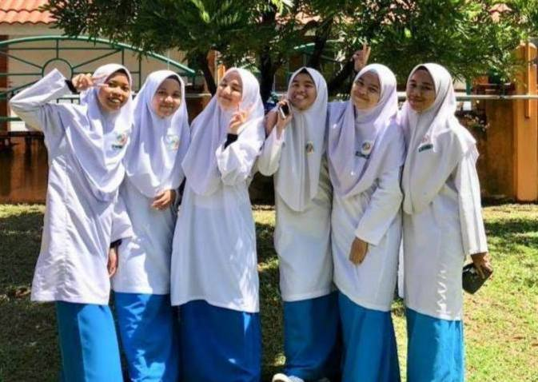
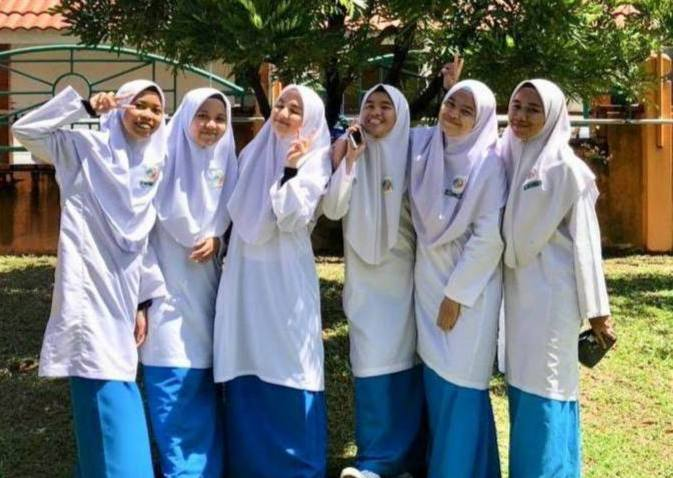

When I was 5 years old, I started school at Tadika Yayasan Gong Badak, Kuala Terengganu. Besides, I also participated in the khatam al Quran program held at an indoor stadium when I was 6 years old and I got the runner-up in the al-Quran recitation program. Plus, I always get number one in the class & be a class assistant.
2.Sekolah Kebangsaan Kompleks Gong Badak


When I was 7 years old, I entered Primary School which is Sekolah Kebangsaan Kompleks Gong Badak. My parents have decided to get into this school because it is very near with my house and I also can go to school by just walking. Next, I was also entrusted by the teacher to be the library supervisor at the school, and at the same time, I am very interested in this given responsibility because it can train me how to manage a library well. In addition, being the supervisor of the library also can add my knowledge more because there are many reading materials in the library that I can use in learning.I participated in the parade event held at the school and I was also active in co-curriculum activities by being the vice chairman of the girl guide. Lastly, I always get the sapphire award and the most book reading award.
3.Sekolah Menengah Kebangsaan Kompleks Gong Badak


 

Then, I went to secondary school at Sekolah Menengah Kebangsaan Kompleks Gong Badak which is next to my primary school. I took the accounting and sports science streams because they are my favourite subjects in high school. Next, I am also active in sports at my secondary which is in running & throwing bullets. My school also makes graduation days for students who pass Malay Language and History subjects. Students are required to wear robes & it is held in an indoor stadium.
4.Universiti Teknologi Mara Machang, Kelantan


Last but not least, after successfully graduating from secondary school I continue furthering my studies at Universiti Teknologi Mara Machang, Kelantan in Diploma of Information Management. The saddest thing that I have to face in my university life is I can only study face to face in semester one meanwhile the other semester is required online distance learning due to covid 19 which hit Malaysia and was capable of claiming lives. Besides, there are many obstacles that I have to face in online distance learning which is poor of internet connection, lack of time management and also have difficulty in understanding what the lecturer is teaching. Then, I was very happy with myself because I managed to reach the dean’s list four times in a row even I learned a lot through online distance learning than face to face.